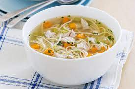

Juha

Opis
Ukusna juha sa rezancima i piletinom, kuhana čitav dan da se postigne potrebna razina ukusa za istančane asgardijske nepce.
Izvorno, juha je rađena sa okruglicama, međutim, moderni su se kuhari ipak odlučili na rezance kao bolju i ukusniju alternativu. Staromodni kuhari je još uvijek kuhaju po tzv. Odinovom receptu, sa okruglicama.
Sastojci:
- Rezanci
- Pileće meso s kostima
- Voda
- Razno povrće
Postupak:
- Stavite vodu u lonac da zakuha
- Očistite povrće
- Ubacite povrće i meso da kuha
- Kad povće i meso omekša, procijedite juhu u drugi lonac
- Stavite rezance u juhu da se skuhaju po uputama na vrećici
- Dok se rezanci kuhaju, očistite meso od kostiju i ubacite sa rezancima.
- Začinite po potrebi
Natrag na kuharicu
Hrvatski/Croatian
Engleski/English